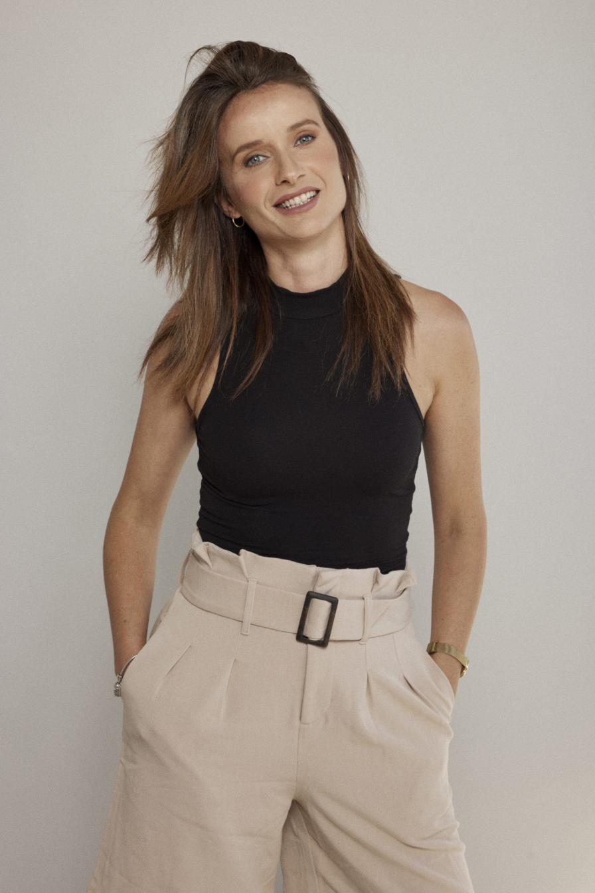
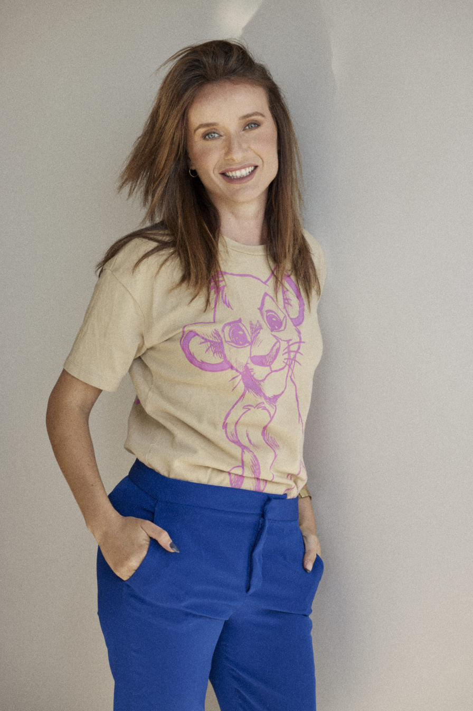

חייכם לא צריכים
להיות מאבק
מתמיד.
שיטת סאטיה מציעה דרך אחרת להתמודד עם אתגרי החיים, דרך של ריפוי, שחרור וחיבור עמוק לעצמכם.

התפתחותו של אדם תלויה ביכולתו להתבונן בתחושות הגוף,
להימנע מפתרונות חיצוניים, לפתח שקט נפשי,
להקשיב לשפה, לשחרר את האחיזה הרגשית.
זו העבודה הסאטית.

אני לילך חזן
מאמנת להתפתחות אישית וזוגית בשיטת סאטיה
בחמש שנים האחרונות אני מלווה א.נשים ובני נוער בדרכם מערך עצמי נמוך, סטרס, חרדה ומשברים, לרווחה נפשית, תחושת ביטחון, מסוגלות, הגשמה והשפעה.
האימון הסאטי מאפשר להשתחרר מדפוסים מעכבים, לקחת אחריות אישית מלאה על חייכם ולנוע לעבר התפתחות וחיבור מדוייק לאמת הפנימית שלכם.
שיטת אימון תראפויטית
לצמיחה אישית
שיטת סאטיה היא גישה אינטגרטיבית המשלבת כלים מהפילוסופיה הבודהיסטית והאקזיסטנציאליסטית, תרפיה מבוססת גוף, ואימון מודרני.
המפגשים מתנהלים במרחב בטוח וקשוב, תוך התמקדות בתחושות הגוף, ברגשות ובתפיסות העולם. המטרה: לפתח חוסן נפשי, חמלה עצמית, ולקחת אחריות אמיתית על החיים.
השיטה פותחה על ידי נטאלי בן דוד אלנתן מתוך חזון להפחית סבל ולעזור לאנשים לחיות חיים מלאים ומשמעותיים יותר.
השיטה מתאימה לך אם...
אם זיהית את עצמך באחת מהאמירות הללו, הגעת למקום הנכון.
דפוסים חוזרים, החלטות שקשה לקבל, תחושה של ריצה במקום בלי להתקדם באמת.
הראש לא מפסיק לעבוד, השינה לא טובה, יש תחושת לחץ מתמדת או התקפים שמפריעים לחיים.
פרידה, אובדן, שינוי גדול, אכזבה, משהו זעזע את היסודות ומחפשים איך להמשיך הלאה.
להבין מה מניע אותך, למה מגיבים כמו שמגיבים, מה באמת חשוב, מעבר לרעש החיצוני.
רצון לחיות חיים מלאי משמעות, חיים שמרגישים אמיתיים ומדוייקים לעצמך.
בלי פתרונות קסם או טריקים מהירים. המטרה היא להתבונן פנימה, להתחייב לתהליך ולקחת אחריות על הדרך.
אבני היסוד של סאטיה
חמישה יסודות שיוצרים יחד תהליך עומק של היכרות עצמית, ריפוי וטרנספורמציה.
עבודה על נשימה
הנשימה היא מקור החיים שלנו והכלי הזמין ביותר לוויסות מערכת העצבים. כאשר אנו לומדים להקשיב לנשימה, אנו לומדים להיות נוכחים בחיים שלנו.
לקיחת אחריות על הנשימה היא לקיחת אחריות על החיים. דרך תרגול ממוקד, נלמד להשתמש בנשימה כעוגן בכל רגע נתון, בעת חרדה, סטרס, או בקשת רגיעה.
תחושות גוף
לגוף שפה משלו. הוא מדבר איתנו דרך תחושות שמשקפות את המצב הרגשי שלנו. שיטת סאטיה מבוססת על ההנחה שחווית החיים היא בראש ובראשונה חוויה תחושתית-רגשית.
דרך תשומת לב לתחושות הגוף, נלמד להבין את האותות שהגוף שולח לנו ולפענח את המסרים העמוקים שמתחת לפני השטח.
עבודה עם שפה
השפה היא לא רק כלי לתיאור המציאות, היא יוצרת אותה. המילים שבהן אנחנו משתמשים מעצבות את החוויה שלנו, את היחסים שלנו ואת התפיסה העצמית שלנו.
דרך עבודה עם שפה, נלמד לזהות דפוסי דיבור שמגבילים אותנו, להחליף נראטיבים פנימיים מזיקים, ולבחור במילים שמשרתות את הצמיחה.
חמלה עצמית
חמלה עצמית היא היכולת להקשיב לעצמנו מתוך מקום של קבלה, הבנה ואהבה, במקום ביקורת, שיפוטיות והאשמה.
דרך פיתוח חמלה, נלמד להתייחס לעצמנו כמו שהיינו מתייחסים לחבר קרוב במצוקה. זוהי המיומנות הבסיסית ביותר לבריאות נפשית ולמערכות יחסים בריאות.
ויסות רגשי
ויסות רגשי הוא היכולת לנהל עוצמות רגשיות בזמן אמת, לזהות גל מתקרב, להבין מה גורם לו, ולבחור איך להגיב במקום להיסחף.
דרך תרגולים מעשיים, נלמד טכניקות שעוזרות במצבי הצפה, חרדה וכעס, כלים שאפשר ליישם בכל מצב ובכל זמן.
מה תקבלו בתהליך?
להבין את המחשבות, הרגשות והתגובות שלכם ומה באמת מניע אתכם.
ריפוי טראומות וזיכרונות כואבים, לא כדי לשכוח, אלא כדי לחיות בחופש.
ביטחון אמיתי שנובע מפנים, לא מאישורים חיצוניים.
תקשורת אותנטית וקשרים משמעותיים עם עצמנו ועם האחרים.
לחיות בהווה, ליהנות מהרגע ולבטא את הפוטנציאל המלא שלנו.
מה אומרים המתאמנים?
אלה סיפורים אמיתיים של אנשים שעברו תהליך, בקול שלהם.
תהליך עם לילך שינה אותי מהיסוד. למדתי להקשיב לגוף שלי ולהפסיק לברוח מעצמי. היום אני חיה בהרבה יותר שלווה ונוכחות.
הגעתי עם חרדה חמורה ויצאתי עם כלים אמיתיים לחיים. לילך יוצרת מרחב בטוח שמאפשר עומק ואותנטיות אמיתית.
אחרי שנים של טיפולים שונים, הגישה הסאטית היתה זו שסגרה מעגל. ממליצה בחום לכל מי שמחפשת שינוי אמיתי ועמוק.
דברים שכדאי לדעת
תשובות לשאלות שאני מקבלת הכי הרבה לפני שמתחילים את התהליך.
מוכנים לצעד הראשון
אל החופש?
שיחת ההיכרות הראשונה היא ואינה מחייבת לכלום.
נכיר, נבין מה מביא אתכם, ונבחן אם זה מתאים.
מעוניינים
לשמוע עוד?
צרו איתי קשר והגיעו לשיחת היכרות. השיחה הראשונה היא ואינה מחייבת לכלום.